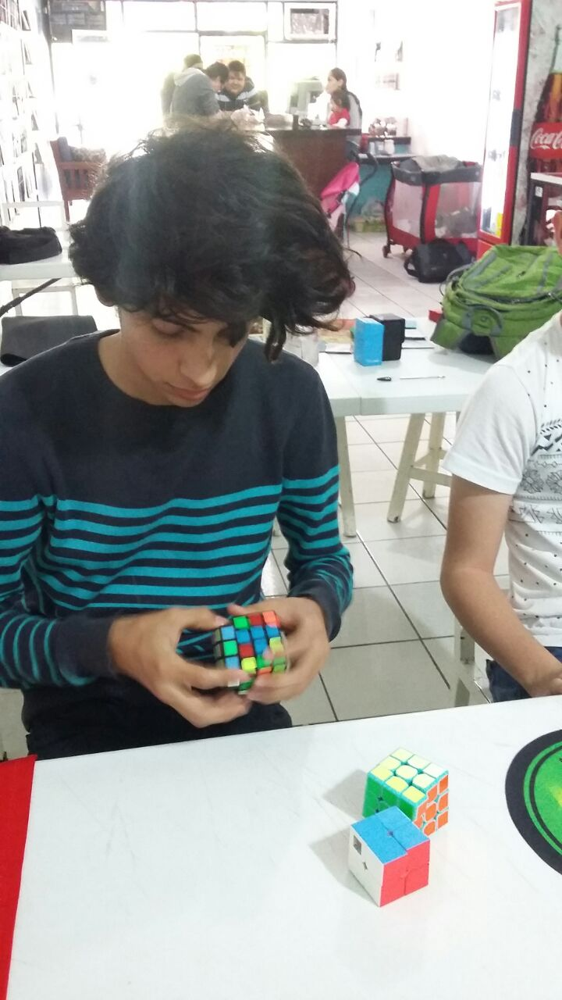
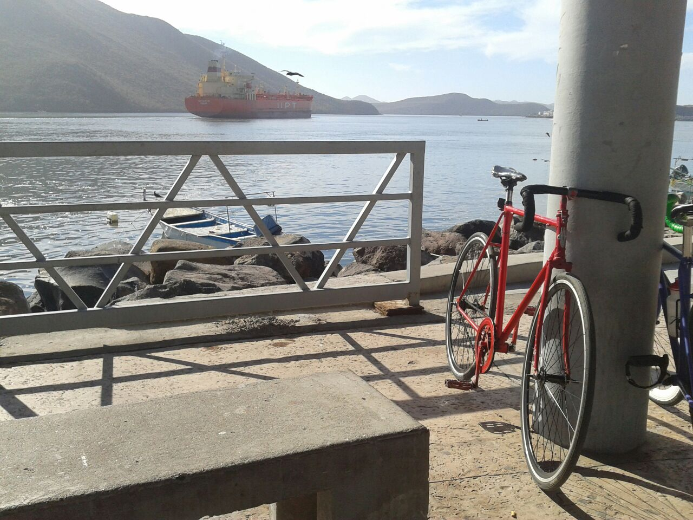
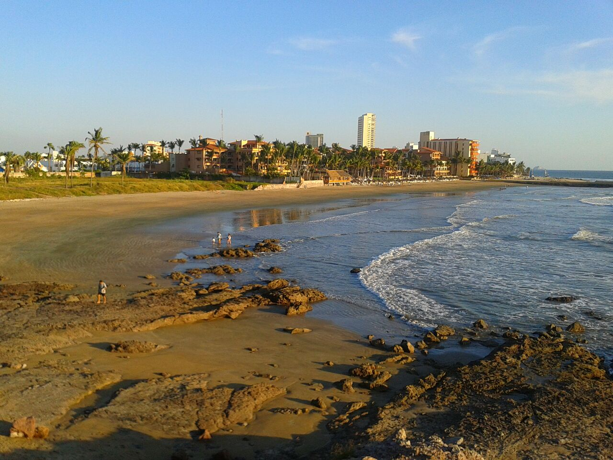
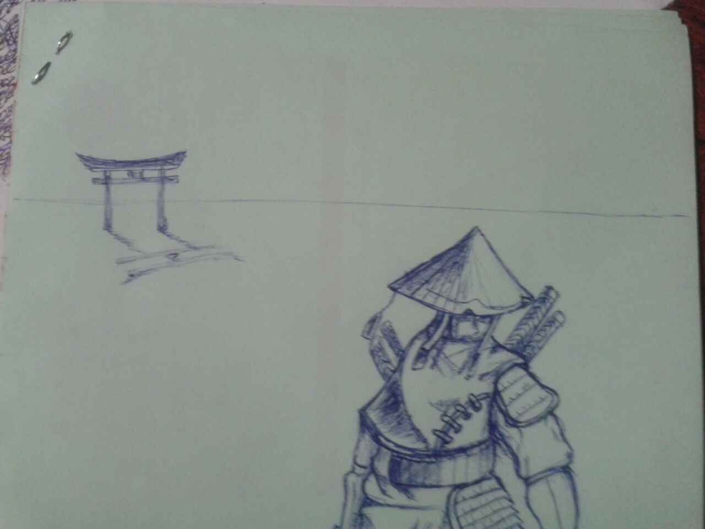
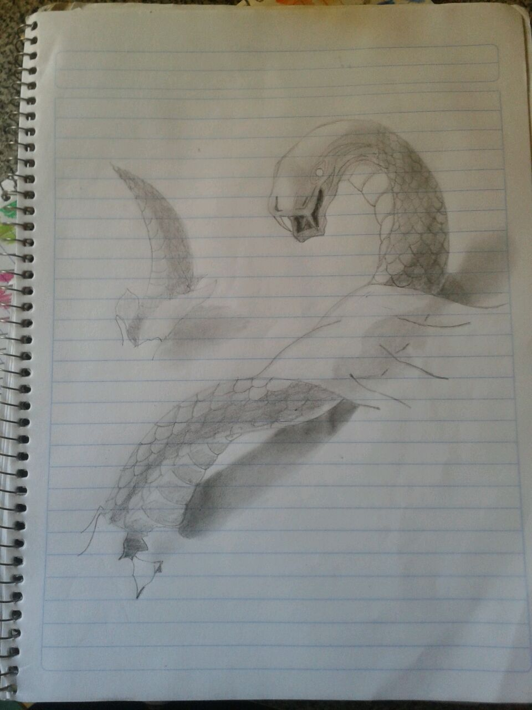

Actualmente es una de las cosa que más hago, aprendí a armarlo desde que estaba en la secundaria, tenía como 13 años, aprendí con un cubo que compre en el centro que costaba como $20 en ese entonces, deje de armarlo por varios años, pasaron como 5 años cuando retome esta actividad. Cuando tenía 18 años en el primer semestre de universidad, un día una compañera de clase llevo su cubo y se lo pedí prestado, gracias a ese cubo nos conocimos más y también aprendieron unos cuantos amigos gracias a ello, en ese semestre pedí mi primer cubo de calidad,por así decir, un cubo bueno para speed solving, me costó $140.
Cuando me cambie a informática también había compañeros que resolv ían el cubo de rubik, me relacione muy bien con ellos, actualmente uno de ellos vende cubo, le eh comprado algunos, también ha realizado torneos no oficiales de speed cube, con el participe en mi primer torneo no oficial, y sigo asistiendo a sus torneos. Desde que me cambie a informática aprendí a resolver otros cubos, el cubo de rubik es de 3x3x3, eh resuelto el 2x2x2, 4x4x4, cubo mirror 3x3x3, mastermorphix, floppy, ivy cube, 5x5x5, pyraminx.
Eh mejorado bastante, recuerdo que a los 13 años tardaba en armarlo como 1 minuto y medio o casi 2 minutos, a los 18 años, cuando retomé el vicio, aprendí otros métodos más rápidos de armar el cubo, baje bastante esos tiempos, tardaba como 50 segundos, me emocione y eh seguido practicando, hace poco más de 1 año me entere de que existían submétodos y con la práctica bajé mucho esos tiempos de armar el cubo. Actualmente se resolver el cubo de rubik con 4 métodos distintos, y nociones de 3 submétodos. Resuelvo algunos cubos a velocidad, mi mejor tiempo en 2x2x2 es de 0.45 segundos, en 3x3x3 es de 12.99 segundos y 4x4x4 es de 1 minuto con 11 segundos. Le dejo por aquí mi colección de cubos.

A día de hoy tengo una bicicleta fixie rodado 27, en un momento le explico lo que es una fixie si es que no lo sabe; esa bicicleta comenzó más o menos decente, tenía frenos y rin trasero para cambios, con el tiempo la fui modificándola, se le rompían los chicotes de los frenos y en vez de cambiarlos se los quitaba, que buena solución, después se me rompieron las tasas del rin trasero y le cambie los dos de una vez, son los que tengo actualmente, duré como 2 años sin usar frenos, usaba los tenis para frenar, el 15 de febrero del 2017 cambie la maza del rin trasero por uno que tuviera pió fijo para convertirla en una fixie; una fixie tiene una sola marcha y siempre se pedalea, para frenar se debe de aplicar fuerza en sentido inverso, también se puede ir marcha atrás o pedalear de reversa. Estoy en un grupo de ciclistas llamado$ cráneos fixie Los Mochis, en este grupo lo que se busca es el uso de la bicicleta fixie, salimos a rodar por la ciudad a menudo y también fuera de ella, como a topolobampo, por ejemplo, tenemos planes de salir al El Fuerte y a Ahome. A la mayoría de los lugares a los que voy es en bicicleta, no me gusta usar el transporte colectivo, ni el taxi, me gusta ir en bicicleta o caminando, o cuando se puede de raite con Antonio Chavarín, concordamos en lugares frecuentemente.

A la edad de 16 aó mi padrino Antonio Sánchez, me enseñó fotogrfía con cámara profesional y toda la cosa, un año despué a los 17 años me lleví a uno de sus eventos a Mazatlán para colaborar con él. Fue la primera vez que iba a Mazatlan en esa ocasión fue por trabajo pero tambié me la pasé muy bien. Actualmente ocasionalmente le ayudo a tomar fotos, tambié de vez en cuando tomo fotos, le muestro algunas de mis fotos.


Desde pequeño dibujo, y no es por presumir pero, no fui a ninguna clase de dibujo, aquí unas imagenes.

